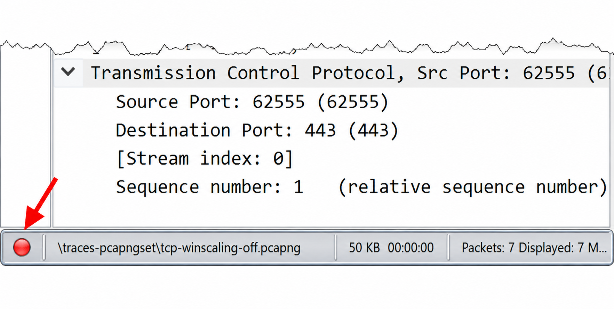
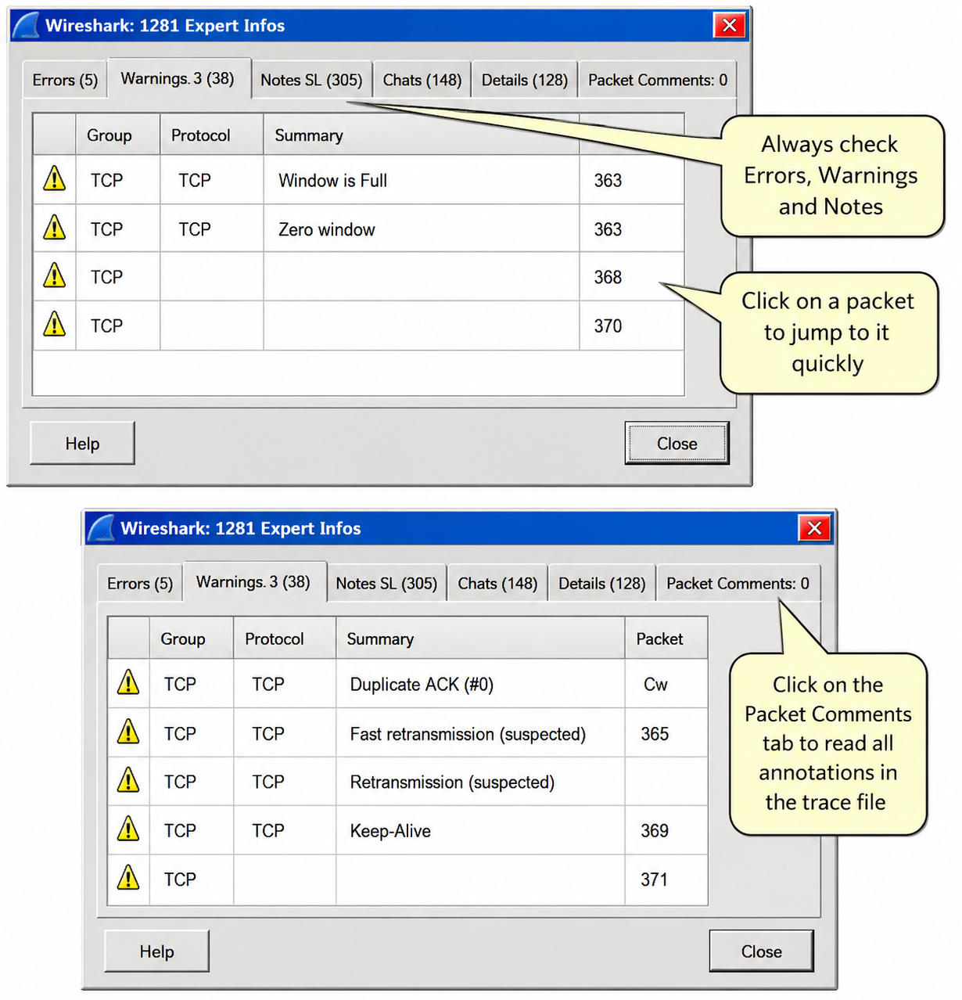
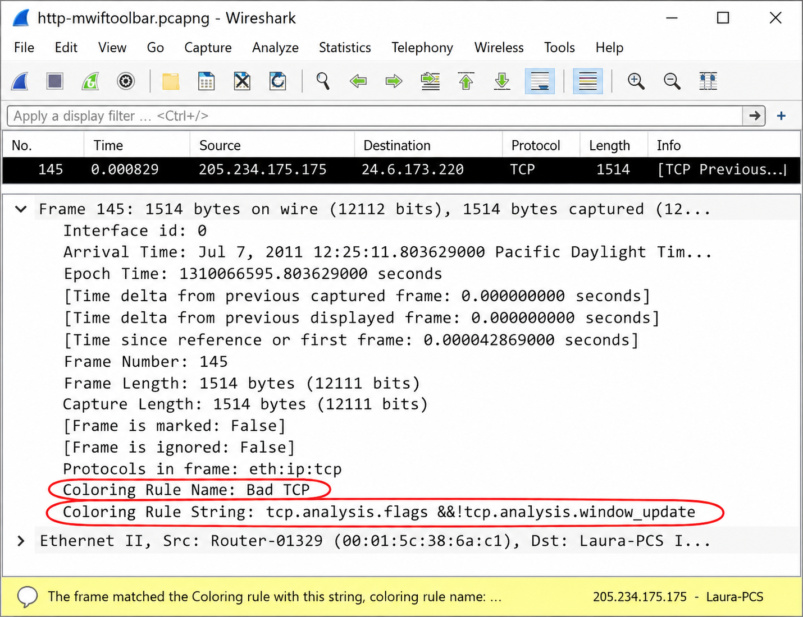
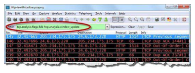
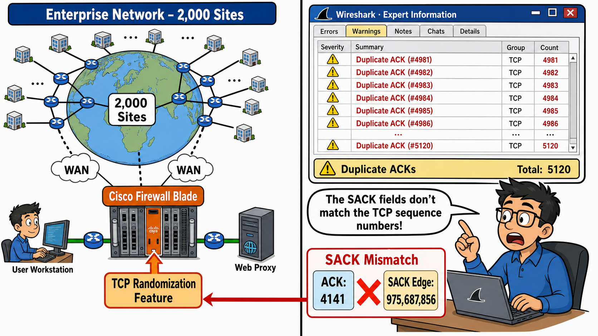

The Expert Info button on the Status Bar is color-coded to indicate the highest level of Expert notification. What are the six colors and what does each represent? Which color indicates the worst condition?
The Expert System is primarily based on TCP communications. Why does TCP generate far more Expert notifications than UDP, ICMP or other protocols?
Let Wireshark's Expert Information Guide You
Wireshark's Expert Information is defined in the protocol dissectors. Expert Information is classified into four categories:
| Category | Color | Description |
|---|---|---|
| Errors | Red | Packet or dissector errors |
| Warnings | Yellow | Unusual responses from the application/transport |
| Notes | Cyan (Light Blue) | Unusual responses that may be part of a recovery process from a Warning |
| Chats | Blue | Information about the workflow |
| Comments | Green | Packet annotations |
| None | Grey | No Expert notifications triggered |
Open the Expert Infos window by clicking the Expert Info button on the left of the Status Bar or choose Analyze | Expert Info. The button is color-coded to show the highest level triggered. Each category is represented under a different tab. There is also a Details tab listing all categories in one location.

As of Wireshark 1.8, you can enable the Display LEDs preference setting in the Expert Infos dialog tab labels to add the related color codes to each tab.
Figure 176 shows the Expert Info information for a trace file depicting a network plagued with packet loss. In the Warnings area: 100 Previous Segment Lost, 1 Window Full condition, 7 Zero Window conditions. In the Notes area: Duplicate ACKs, Fast Retransmissions, Retransmissions and KeepAlives. We can correlate the slow download with a window size issue and packet loss.

By default, Wireshark colorizes all tcp.analysis.flags packets with a black background and red foreground using the "Bad TCP" coloring rule. How would you make a specific Expert Info element stand out differently from other Bad TCP traffic?
You can filter on Expert Info severity level using expert.severity==warn. What are the four severity level filter values, and which Expert Info tab would a Zero Window Probe ACK appear under?
Colorize & Filter Expert Info Elements
By default, Wireshark colors packets that match the tcp.analysis.flags coloring rule with a black background and red foreground. These packets are listed in either the Expert Info Warnings or Notes tabs. Expanding the Frame section shows the coloring rule applied. In Figure 177, the packet matches the Bad TCP coloring rule using the string tcp.analysis.flags && !tcp.analysis.window_update.
To create a filter based on the coloring rule name: frame.coloring_rule.name=="T-Low Window Sizes" displays all packets matching that specific coloring rule. You can change the colorization of Expert packets by editing the coloring rules.

Filter on TCP Expert Information
Apply a display filter for tcp.analysis.flags to show packets that match the Expert Info Notes and Warnings triggers. Figure 178 shows the result — a fast method to detect TCP-based problems in any trace file.

tcp.analysis.flags && !tcp.analysis.window_update. Click it when opening any trace file to immediately locate the most common TCP-related network problems.Filter on Expert Severity Level
You can create display filters for specific Expert Info severity levels:
expert.severity==error expert.severity==warn expert.severity==note expert.severity==chat
And filters for specific Expert Info groups:
expert.group==checksum # invalid checksum expert.group==sequence # sequence number issue expert.group==malformed # malformed packet or dissector bug expert.group==protocol # invalid field value
A Zero Window condition shuts down data transfer until the receiver sends a non-zero window update. What is the underlying cause, and what host characteristic should you focus on when troubleshooting it?
A "4 NOP in a row" warning indicates a router has modified TCP header options in the handshake. Why is this harmful, and how can a SACK option being stripped cause spurious retransmissions?
TCP Expert Notifications
The TCP dissector file (packet-tcp.c) defines 15 TCP Expert notifications. "Analyze TCP Sequence Numbers" (enabled by default in TCP preferences) drives these notifications:
| Notification | Tab | Description |
|---|---|---|
| Retransmission | Notes | Same sequence number as a previous packet. Triggered by RTO expiry or 3 Duplicate ACKs. |
| Previous Segment Lost | Warnings | Expected sequence number was skipped — packet before the current one is missing. |
| ACKed Lost Packet | Warnings | ACK received for a packet Wireshark never saw — typically asymmetric routing or span port drops. |
| Keep Alive | Warnings | TCP host sends probe when keep-alive timer expires. |
| Duplicate ACK | Notes | Receiver requests a missing segment; 3 identical ACKs triggers sender to retransmit. |
| Zero Window | Warnings | Receiver has no buffer space — shuts down data transfer until Window Update received. |
| Zero Window Probe | Notes | Sender checks if Zero Window condition has resolved — contains one byte of data. |
| Zero Window Probe ACK | Notes | Response to Zero Window Probe. Acks the probe byte if window opened. |
| Keep Alive ACK | Notes | Response to Keep Alive. If window size is zero, Zero Window condition persists. |
| Out of Order | Warnings | Data packet with lower sequence number than previous — indicates multi-path routing. |
| Fast Retransmission | Notes (v1.8+) | Retransmission within 20ms of a Duplicate ACK. |
| Window Update | Chats | No data; receiver advertises larger buffer — good packet, recovery from Zero Window. |
| Window is Full | Notes | Data packet that will fill the receiver's remaining buffer — Zero Window warning. |
| TCP Ports Reused | Notes | New TCP session reusing same IP:port combination as earlier conversation — common in security scans. |
| 4 NOP in a Row | Warnings | Router stripped a TCP option (e.g., SACK) from a handshake packet and replaced with 4 NOPs. |
The "4 NOP in a Row" warning means a router altered the TCP header, often stripping out SACK. This is a router bug or misconfiguration — a server that never receives the SACK option in the handshake will not use SACK with that client, causing unnecessary retransmissions when packets are lost.
Case Study
The call center was receiving multiple complaints about slow or unavailable Internet access. All affected sites were on low-speed ADSL access and using the Internet through a web proxy service. Since the problem disappeared when bypassing the web proxy, the proxy seemed to be at fault — but 1,000 other sites using the same proxy had no issues.
Network taps and port mirroring weren't available at affected sites, so a USB drive solution was created: 250GB USB external drives with Tshark and WinPcap installed, and scripts to run Tshark as a service (called "USBTSHARK"). These captured all traffic in 200MB chunks on affected workstations.
When the traces came back, the Expert Info window eventually revealed an abnormally high number of Duplicate ACKs. Isolating affected sessions showed a pattern: the web proxy server was retransmitting the last acknowledged frame instead of the missing frame. After a few rounds of this incorrect retransmission, the workstation reset the session.
Examining a few frames back, the sessions were using the SACK option. But the SACK values in the TCP header were completely different from those in the SACK option field — the TCP sequence numbers in the header were unrelated to those in the SACK option field. Something had modified the TCP headers.
A multi-point trace with four probes along the path revealed: the TCP headers were being modified between the two WAN routers. Investigation uncovered that Cisco's Firewall blade module had a "TCP randomization" feature that replaced ISN (Initial Sequence Numbers) with "more secure" values but could NOT maintain the new sequence numbers in the SACK option field.
The "feature" could not be completely disabled. The only solution was to abandon SACK on the affected sessions.

Wireshark's Expert System offers a quick look at traffic that hints of network problems or unusual activity. There are six sections in the Expert System: Errors, Warnings, Notes, Chats, Details and Packet Comments. The Expert Info button on the Status Bar indicates the highest level of Expert notification triggered in the trace file.
Expert Info details for a protocol are maintained in the protocol's dissector. TCP has the largest number of Expert notifications. To view all TCP Expert notifications, apply a display filter for tcp.analysis.flags. By default, Wireshark has a coloring rule for this traffic. You should always verify problems identified by the Expert System.
Review Questions
Click on the Expert Info button on Wireshark's Status Bar.
By default, Wireshark colors all Expert Info elements with a black background and red foreground. You can make specific Expert Info elements stand out by creating a coloring rule for the element (e.g., tcp.analysis.retransmission) and placing it above the Bad TCP coloring rule.
Apply a display filter for tcp.analysis.flags to filter on all TCP Expert notifications.